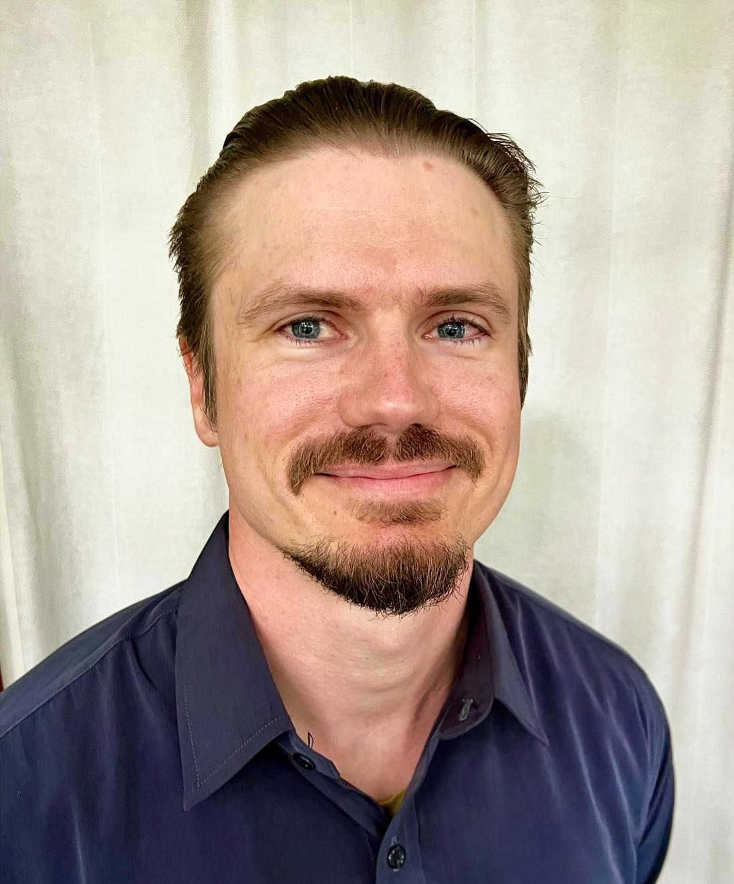

The Q-Ontic Lab brings together physicists, mathematicians, educators, and visualization makers across the globe. Our collaboration combines expertise in quantum foundations, numerical computation, mathematical physics, and physics education to develop interactive simulations that enable comparative exploration of quantum mechanics' interpretative frameworks.
Core Team

Jean Bricmont
Emeritus Professor of Physics
Université catholique de Louvain (UCLouvain)
Louvain-la-Neuve, Belgium
Renowned mathematical physicist and philosopher of science. Pioneer in rigorous
approaches to quantum mechanics and Bohmian mechanics. Author of influential works
on quantum foundations and the philosophy of physics.
Research Areas
Quantum mechanics, Bohmian mechanics, quantum foundations, philosophy of science, statistical mechanics

Dustin Lazarovici
Assistant Professor
Mathematical physicist specializing in quantum foundations, Bohmian mechanics, and
interpretational frameworks of quantum mechanics. Expertise in rigorous mathematical
formulations of quantum theory.
Research Areas
Bohmian mechanics, quantum foundations, interpretations of quantum mechanics, mathematical physics

Xavier Oriols
Professor of Electronic Engineering
Universitat Autònoma de Barcelona (UAB)
Bellaterra, Barcelona, Spain
Expert in quantum simulation techniques, stochastic approaches to quantum mechanics,
and computational methods for nanoelectronics. Develops novel simulation strategies
bridging quantum mechanics and classical computation.
Research Areas
Quantum simulation, stochastic interpretations, nanoelectronics, quantum–classical interfaces

Jared Stenson
Teaching Assistant Professor of Physics
Rice University
Houston, Texas, USA
Contributing to physics education and collaborative activities in the Q-Ontic Lab,
with a focus on computational pedagogy and interactive learning tools.
Focus
Physics education, computational pedagogy, interactive learning

Shadi Tahvildar-Zadeh
Professor of Mathematics
Rutgers University
Piscataway, New Jersey, USA
Mathematical physicist with broad expertise in partial differential equations,
quantum field theory, and gravitational theory. Provides rigorous mathematical
foundations for quantum mechanics and field theories.
Research Areas
Mathematical physics, quantum field theory, PDEs, gravitational theory

Evelyn Tang
Assistant Professor of Physics
Rice University
Houston, Texas, USA
Theoretical physicist studying living and active matter systems, emergent dynamics,
and out-of-equilibrium phenomena. PhD from MIT (2015), postdoctoral experience at
Max Planck Institute and University of Pennsylvania.
Awards
NSF CAREER Award · IUPAP Interdisciplinary Early Career Prize · Simons–Berkeley Fellowship

Pablo Yepes
Research Professor
Rice University
Houston, Texas, USA
Long-standing interest in the foundations of physics with ample experience in
computational simulations. Principal developer of the Q-Ontic Lab.
Research Interests
Nuclear physics, medical physics, high-performance scientific computing, physics foundations

Anssi Kuha
Teacher / Graphics Artist
Imagining Physics
Helsinki, Finland
Author of the Imagining Physics YouTube channel.
Turns physics and math into videos, animations, and games.
Turns physics and math into videos, animations, and games.
Current Focus
Visualizations: pilot-wave theory and the theory of relativity.
Collaboration Focus
Our international team unites expertise across multiple disciplines and institutions:
Quantum FoundationsRigorous analysis of Copenhagen, Bohmian, and Many-Worlds interpretations
Computational MethodsGPU-accelerated simulations and real-time numerical integration
Visualization DesignInteractive tools for intuitive quantum understanding
Mathematical FrameworksRigorous formulations of quantum mechanics and interpretive theories
Physics PedagogyNovel approaches to teaching quantum mechanics through representational comparison
Quantum SimulationStochastic and deterministic approaches to quantum computation